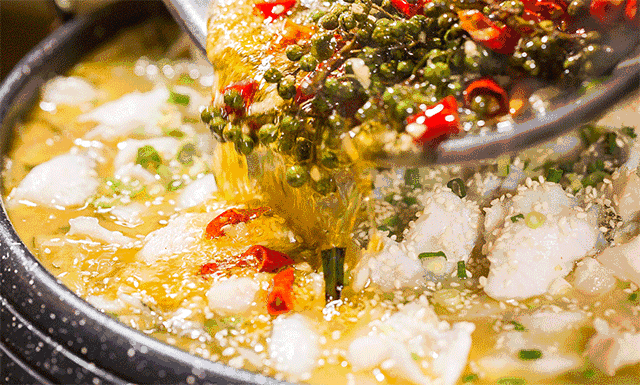
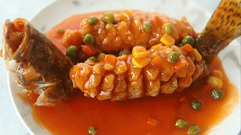

水煮鱼

水煮鱼通常由新鲜草鱼、豆芽、辣椒等食材制作而成。“油而不腻、辣而不燥、麻而不苦、肉质滑嫩”是其特色。
1.将鱼杀好洗净，剁下头尾，片成鱼片，把剩下的鱼排剁成几块。将鱼片用少许盐、料酒、生粉和一个蛋白抓匀，腌15分钟（头尾及鱼排另装盘，用同样的方法腌制）。
2.烧开一小锅水，洗净的豆芽放入开水中烫一下，捞入大盆中，按个人口味撒一点盐，备用。
5.辣椒颜色快变时，立即关火，把锅中的油及花椒辣椒一起倒入盛鱼的大盆中。
松鼠桂鱼

松鼠桂鱼，又名松鼠鳜鱼，是苏帮菜中的传统名菜。这道菜成菜后，形如松鼠、外脆里嫩、色泽橘黄，酸甜适口，并有松红香味。
1.将桂鱼去鳞及鳃，剖腹去内脏洗净沥干。各种配料洗净备用